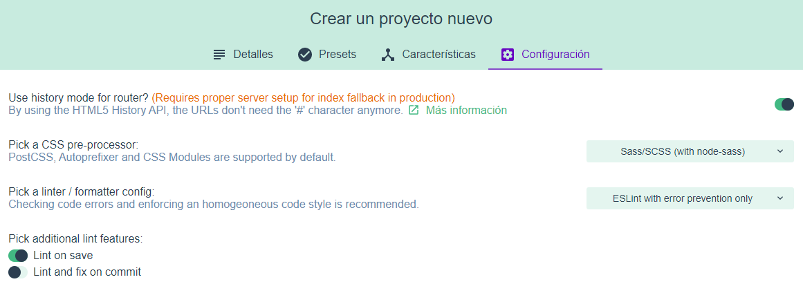
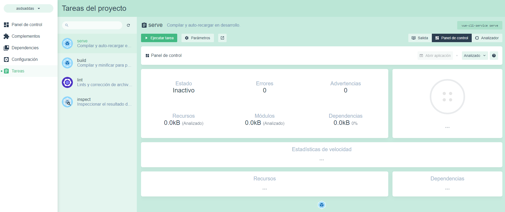

CLASE 4 - ECOSISTEMA DE VUE
¿Qué veremos en la clase?
- Creación de proyecto con vue ui
- Estructura de carpetas
- Ecosistema de Vue
- Librerias de terceros
1 - REPASO VUE UI
La interfaz cuenta con 3 partes:
- Importar: Importas proyectos desde cualquier carpeta del sistema
- Crear: crea proyectos nuevos, te hace una serie de preguntas y los crea.
- Proyectos: Te muestra los proyectos importados en la interfaz o creados con ella.
1.1 Repaso de crear:

Primera pantalla:
- Le damos nombre al proyecto.
- Seleccionamos el gestor npm (Qué es el unico con el que contamos).
- Iniciamos un repositorio de git.
Pantalla presets, recomiendo seleccionarlos manualmente la primera vez:
- Babel (Sí, Pasivo) Permite usar las ultimas funciones de JS guardando la compatibilidad del navegador.
- TypeScript (NO): Javascript tipado.
- PWA (NO): Habilita la web para usar service workers y hacer cosas offline.
- Router (Sí): Permite controlar 'páginas' en el front.
- VUEX (Sí): Control del Estado en aplicaciones grandes.
- Preprocesadores (Pasivo): Permite usar preprocesadores CSS.
- Eslint (Sí, Pasivo): Estandar de código para equipos.
- Unit Testing (No): Test unitarios para el código (para las clases).
- E2E Testing (No): Test End-To-End (simulan ser usuarios).
- Eslint (Sí, Pasivo): Estandar de código para equipos.
- Archivos de configuración (Sí, Pasivo): Reparte la configuración de las librerias de dev(Pasivas) en lugar de ponerlo todo en el package.json.
Pantalla de configuración de librerias del proyecto
- ModoHistorico (Para ROUTER, Pasivo): Quita # del navegador, necesaria configuración en ISS.
- CSS Preprocesador(SASS node): Autoprefijos del navegador, variables en CSS, etiquetas dentro de etiquetas...
- Linter(Solo prevencion): codigo homogeneo para equipos.
- Lint on save(Sí): comprueba el codigo al guardar (ctrl+S)
- Lint and fix on commit(NO): comprueba y CORRIGE el codigo al comitear.
1.2 Repaso del menú de proyecto:
- Panel de control Trae una herramienta para parar procesos.
- Complementos: Complementos del propio Vue-CLI.
- Dependencias: librerias de terceros instaladas con NPM.
- Configuración: configuración de esas librerias.
- Tareas: Lanzar el proyecto y compilar en producción.
2 - ESTRUCTURA DE CARPETAS DE PROYECTO VUE
Jerarquía de primer nivel:
- node_modules/: contiene las librerias externas.
- public/: Contiene el directorio publico, de aquí en principio no se compila nada.
- src/: Directorio principal de la aplicación. Es donde está todo el código.
- ARCHIVOS DE CONFIGURACIÓN: de las distintas librerias utilizadas
- IMPORTANTES: los packages y .gitignore
- README.md: Contiene información legible del proyecto. Se muestra en todos los servidores de GIT.
2.1 Directorio src/:
- assets/: carpeta para los componentes estáticos; css, fuentes, imágenes, videos...
- components/: carpeta para los componentes de las páginas
- views/: carpeta para las 'páginas del proyecto'
- App.vue: componente de primera entrada de vue, sería el default master. Aquí debería de definirse la estructura principal de la APP.
- main.js: archivo que instancia la clase de Vue y le añade los plugins y librerias necesarios, sería como el principal de C#.
- route.js: archivo donde se guardan las rutas de la aplicación del router.
- store.js: archivo donde se almacenan los datos de vuex.
3 - ECOSISTEMA DE VUE

A parte del CLI, VUE cuenta con una serie de librerias necesarias para proyectos medianos y grandes:
- VUETIFY (Lo veremos) el bootstrap de Vue
- VUE-ROUTER (Lo veremos)
- VUEX (Clase 5)
- NUXT: framework con Server Side Rendering
- IONIC Y WEEX: Apps hibridas Android/iOS
- QUASAR: framework todo en uno, como una mezcla de Vuetify + Nuxt + Ionic
3.1 Vuetify (Documentación):
Es un framework css que trae gran cantidad de componentes ya creados.
Hay 2 formas de añadirlo:
1: Añadiendolo al CLI por consola
vue add vuetify2: Añadiendolo con el vue ui, en complementos. Funciona igual
3.2 Vue-Router (Documentación):
La funcionalidad del router se basa en tres principios:
- Define las rutas y los archivos que carga en routes.js y eso te da acceso
- la etiqueta <router-view/> que carga los componentes de las rutas
- llamar a las páginas (declarativo) por vista con la etiqueta <router-link to="/">Home</router-link> (se renderizan a <a>)
- llamar a las páginas (programatico) por código con
// literal string path
router.push('home')
// object
router.push({ path: 'home' })
// named route
router.push({ name: 'user', params: { userId: '123' } })
// with query, resulting in /register?plan=private
router.push({ path: 'register', query: { plan: 'private' } })
3.2.1 Rutas dinámicas (Documentación):
Podemos crear rutas a las que pasamos parametros como IDs de la siguiente formula:
import ProductDetailView from '@/components/views/product-view.vue';
export default new Router({
routes: [
{
path: 'products/:productId',
name: 'product-detail',
component: ProductDetailView
}
]
});
3.2.2 Anidamiento de rutas (Documentación):
Puede haber páginas que comportan más partes que solo el layout que hemos definido en principio, por ejemplo, un proceso de pago, para ello podemos definir subrutas:
const router = new VueRouter({
routes: [
{
path: '/transfer',
component: TransferView,
children: [
{ path: 'config', component: ConfigView },
{ path: 'detail', component: DetailView },
{ path: 'confirm', component: ConfirmView }
]
}]
});
Ahora podriamos poner el componente <router-view/> en transfer.vue y el router se encargaría de saber que renderizar.
Podemos obtener los parametros en las páginas con:
$route.paramsY guardarlo en el hook created() en una variable de data
data () {
return {
id: this.$route.params.id
}
},
De esta forma pasamos el parametro como prop al componente, mucho más versatil.
También es muy útil modificar el comportamiento de los componentes dependiendo de si estas en una ruta u otra, se puede hacer facilmente con una coputed property:
esPaginaX () { return this.$route.name == 'X' }3.2.3 Navegando entre rutas (Documentación):
Las funciones de navegación son identicas a las de la API del navegador.
Como ya hemos visto con $router.push('ruta') navegamos entre rutas.
También puedes pasar parámetros.
router.push({ name: 'user', params: { userId: 123 }})- $router.replace('ruta'): si no queremos que se guarde en el historico de la navegación.
- $router.go(-1): nos permite saltar por el historico de rutas.
3.2.4 Interceptores de navegación (Documentación):
Son una serie de funciones que nos van a permitir realizar diferentes acciones entre la navegación de una ruta a otra.
Nos pueden venir bien para realizar ciertas redirecciones o para abortar una navegación si algo no se encuentra cómo el sistema espera.
vue-router cuenta con varias opciones para incluir estos interceptores que van desde el registro del interceptor de manera global hasta el registro del interceptor de manera local.
Para ello, las funciones cuentan con 3 parámetros (to, from, next)
- to indica la pagina destino
- from: indica la página de origen
- next: function que realiza el cambio de página
-
GLOBALES: Dentro de vue-router contamos con la posibilidad de registrar un interceptor que se ejecutará cada vez que se realice un cambio de ruta. Este interceptor se ejecuta de manera global, es decir, para toda las rutas a las que naveguemos, justamente antes de producirse la navegación.
El orden de ejecución es FIFO (El primero en registrarse, es el primero en ejecutarse).const router = new VueRouter({ ... }); router.beforeEach((to, from, next) => { // ... }); -
LOCALES: En ocasiones, puede que necesitamos influir en la navegación de una sola ruta y no en cada una de ellas.
const router = new VueRouter({ routes: [ { path: '/login', component: LoginView, beforeEnter: (to, from, next) => { delete localStorage.token; next(); } } ] }); -
LOCALES EN COMPONENTES: Podemos localizar todavía más cuándo interceptar la navegación. Podemos incluir interceptores a nivel de un componente. Dependiendo del contexto de navegación en el que se encuentre un componente, podremos hacer unas acciones u otras:
const CartSummary = { template: `...`, beforeRouteEnter (to, from, next) { }, beforeRouteUpdate (to, from, next) { }, beforeRouteLeave (to, from, next) { } };
Guía del flujo de los Guards:
- La navegación es activada.
- Se llama a todos los beforeRouterLeave que se hayan registrado y que no van a ser reutilizados en la siguiente ruta a la que voy.
- Se llama a todos los interceptores globales beforeEach.
- Se llama a todos los beforeRouteUpdate de los componentes que van a ser reutilizados en la siguiente ruta a la que voy.
- Se llama a beforeEnter que hemos configurado en la ruta a la que voy.
- Se resuelven toda la asincronía de componentes de esa ruta.
- Se llama a beforeRouteEnter de los componentes que van a estar activos.
- Se da la navegación como confirmada.
- Se llama al interceptor afterEach.
- Se llama a los callbacks pasados a next in beforeRouteEnter.
- Y vuelta a empezar cuando se lanza una nueva navegación.
3.2.5 Incluir meta-información en una ruta (Documentación):
const router = new VueRouter({
routes: [
{
path: '/login',
component: LoginView,
meta: {
isPublic: true
}
}...
Y luego podemos usarla en interceptores, por ejemplo:
router.beforeEach((to, from, next) => {
if (!to.matched.some(record => record.meta.isPublic) && !auth.loggedIn()) {
next({
path: '/login', query: { redirect: to.fullPath }
});
} else next();
});
3.2.6 Sistema de rutas en modo historico HTML5 (Documentación):
Instalar IIS UrlRewrite
Incluir el siguiente código en el web.config:
<system.webServer>
<rewrite>
<rules>
<rule name="Handle History Mode and custom 404/500" stopProcessing="true">
<match url="(.*)" />
<conditions logicalGrouping="MatchAll">
<add input="{REQUEST_FILENAME}" matchType="IsFile" negate="true" />
<add input="{REQUEST_FILENAME}" matchType="IsDirectory" negate="true" />
</conditions>
<action type="Rewrite" url="/" />
</rule>
</rules>
</rewrite>
3.2.7 Cambiar el comportamiento del scroll (Documentación):
Esto solo funciona con el modo historico
Situar el scroll siempre arriba de la página
const router = new VueRouter({
routes: [...],
scrollBehavior (to, from, savedPosition) {
return { x: 0, y: 0 }
}
});
En un lugar concreto
const router = new VueRouter({
routes: [...],
scrollBehavior (to, from, savedPosition) {
if (to.hash) {
return {
selector: to.hash
}
....
4 - LIBRERIAS DE TERCEROS:
vue-auto-routing (documentacion): Rutea automáticamente los componentes de una carpeta concreta como páginas unidas a una url.
Se instala como un plugin de CLI y modifica la estructura de carpetas añadiendo pages/ que se enrutan automaticamente y layout/ que es para crear varios master
vue-json-excel (documentacion): libreria que exporta json a excel